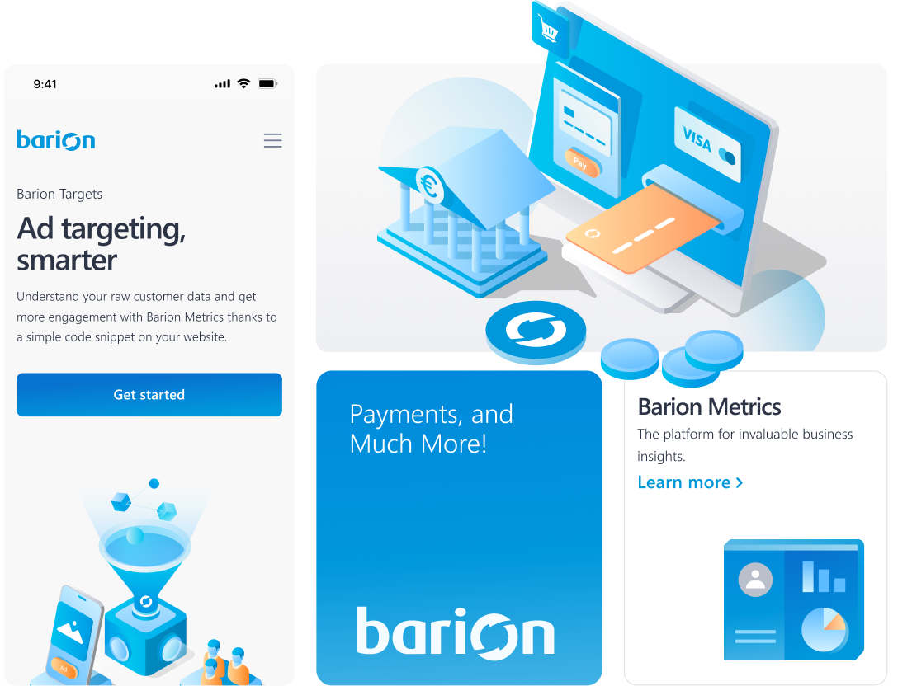
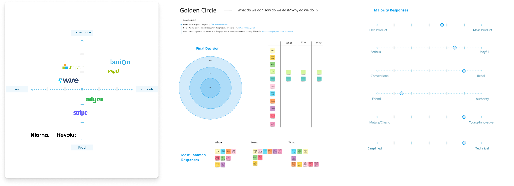
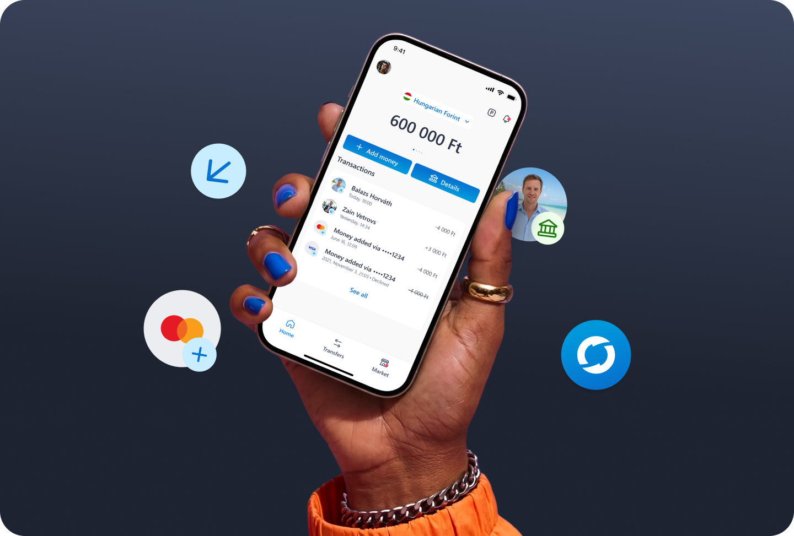
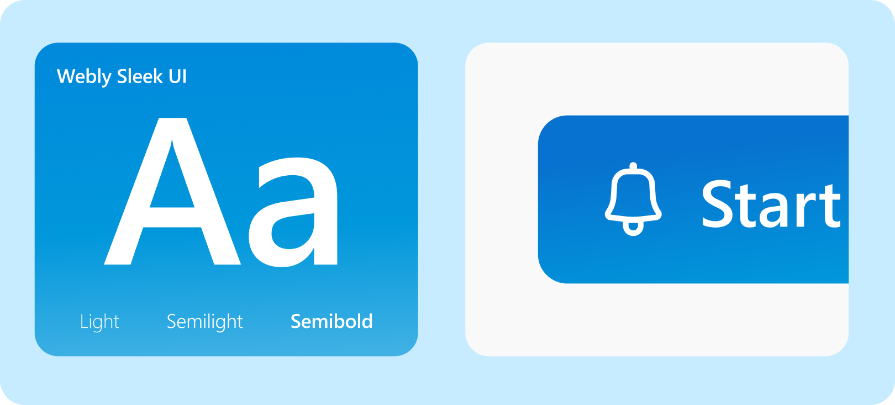
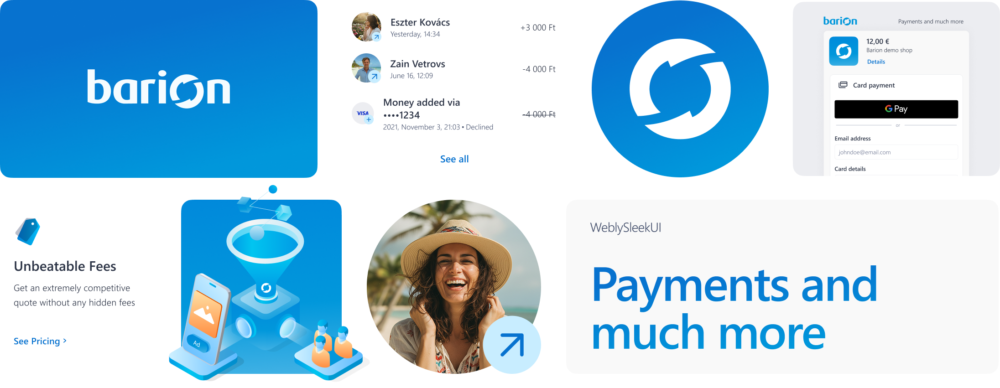
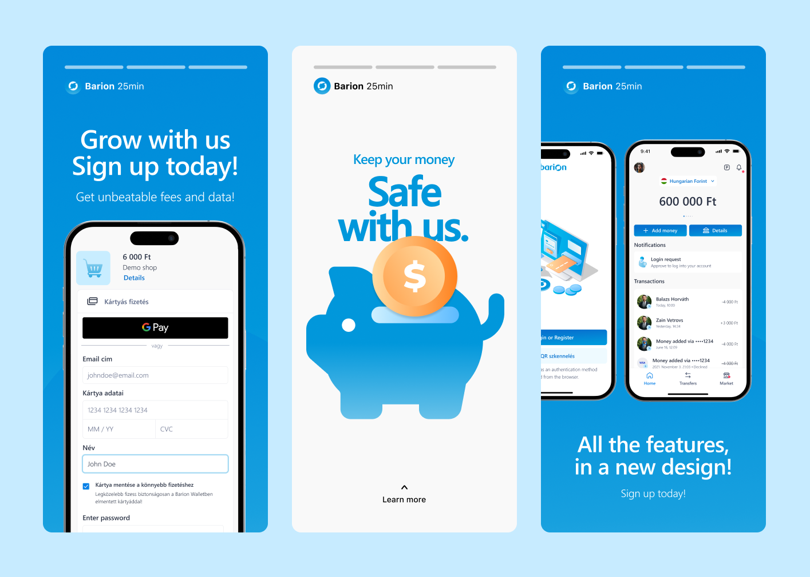
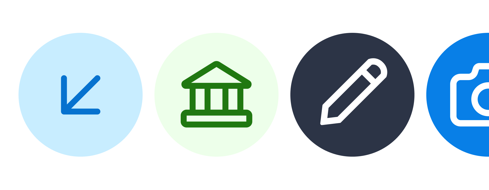
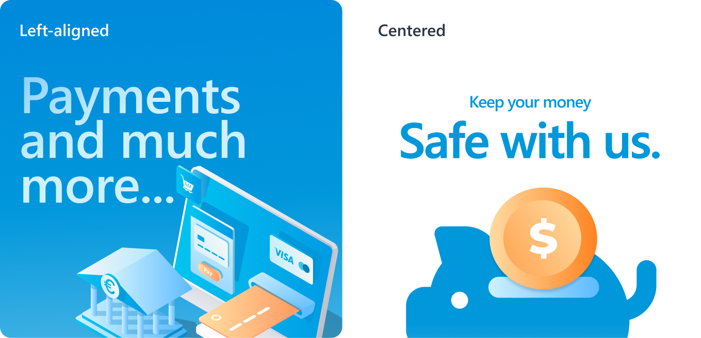

Barion Brand Identity & Design System
A complete brand refresh and design system build for Barion — from strategic positioning to a live component library powering 20,000+ merchant checkouts.
Summary
Barion is a Hungarian fintech company with a 15-year history, powering payments for 20,000+ shops across B2B and B2C markets.
I refreshed the outdated brand identity and built Barion's design system from scratch to make the product experience more consistent, scalable, and aligned with the company's international fintech ambitions.
I was responsible for:
- The full brand refresh, including strategy, visual direction, and a comprehensive guideline for print and digital use.
- Competitive and stakeholder research, including a brand positioning matrix and Golden Circle interviews.
- The creation of a full component library with 40+ components and 90+ variants.
- A 2-tier design token system to support scalable, consistent product design across Barion products.
- Art direction for the illustration approach, including briefing and collaborating with an external illustrator.
- A live design system and brand toolkit that helped designers and developers work faster, saving 2 hours per design cycle and achieving a CES score of 1/5.

Problem
Outdated brand guideline
The existing brand guideline was outdated, inconsistent, and too brief to serve as a reliable reference for print or digital products.
Misaligned identity
The visual identity no longer reflected Barion's market position or its ambition to compete with larger international fintech brands.
No component library
There was no component library, forcing designers to rebuild elements from scratch on every project.
No design tokens
Without design tokens, there was no scalable system to ensure consistency across products.
Process
- Mapped Barion's competitive position using a brand positioning matrix against fintech peers including Stripe, Klarna, Revolut, and Wise.
- Conducted stakeholder interviews using the Golden Circle framework to establish a unified understanding of the brand's purpose.
- Built the full component library and established a 2-tier token system for scalability and consistency.

Solution
Comprehensive brand guideline
Covering logo usage, colour system, typography, iconography, illustration approach, and photography direction.

2-tier design token system
Ensuring scalability across all Barion products

Component library with 40+ components and 90+ variants.

Brand applied consistently across print, digital, and physical touchpoints.

Expanded icon set with additional varieties to support product UI needs.

Art direction for the illustration approach, including briefing and collaborating with an external illustrator.

A live design system and brand toolkit
That helped designers and developers work faster, saving 2 hours per design cycle and achieving a CES score of 1/5.
Outcome
40+ components, 90+ variants delivered — live across Barion products
- 2 hours saved per design cycle after system adoption.
- CES score of 1/5 (lowest = easiest to use) from internal designers and developers.
- Developers independently navigating guidelines without designer support.
- Unified brand representation visible across products, merchandise, posters, and exhibition stands.